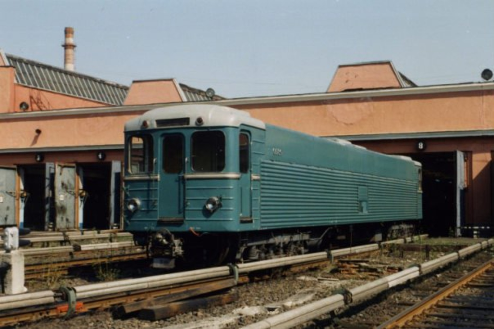
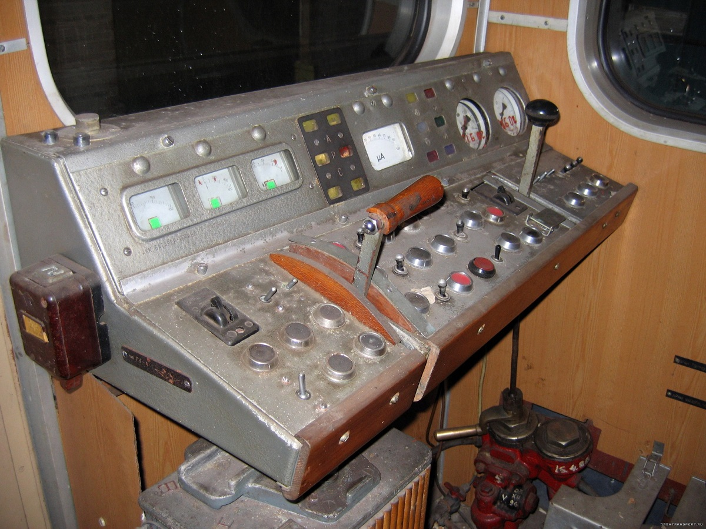
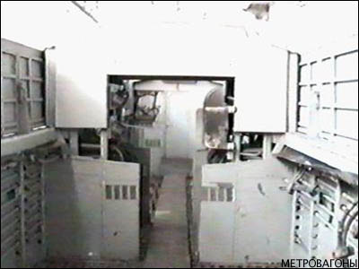

Электровоз типа Л
Л (заводское обозначение — 81-711) — контактно-аккумуляторный электровоз, предназначенный для вождения служебных поездов из вагонов типа Еж6 по обесточенным или неэлектрифицированным линиям метрополитена — системе Д6 («Метро-2»).
Всего Мытищинским машиностроительным заводом было выпущено 6 вагонов типа Л (по некоторым данным — 7) двумя партиями: три в 1974 году и три в 1986-м. Электровозы Л стали первыми советскими контактно-аккумуляторными электровозами метрополитена, изначально созданными для автономного вождения служебных поездов.
Назначение
В начале 1970-х годов для линий метрополитена специального назначения в Москве (система Д6), тоннели которых не оснащались контактным рельсом, было решено использовать специальные электропоезда с возможностью питания как от контактного рельса, так и от аккумуляторных батарей.
Ранее в депо Московского и Ленинградского метрополитенов использовались контактно-аккумуляторные электровозы, переделанные из обычных пассажирских вагонов, однако для Д6 было решено выпустить полностью новый состав.
Схема состава: Еж6 + Л + Еж6 или Еж6 + Л + Л + Еж6, где Л — контактно-аккумуляторный электровоз (81-711), а Еж6 — головной вагон сопровождения.
При движении на аккумуляторном ходу на неэлектрифицированных участках поезда могли развивать скорость не более 15 км/ч. При движении по электрифицированным участкам поезда могли двигаться с большей скоростью, но при этом электровозы Л выступали в роли ведомых, а управление велось из вагонов Еж6.
Производство
Мытищинский машиностроительный завод под руководством главного конструктора А. Г. Акимова разработал проект специального подвижного состава на базе серийных Еж3. Были созданы две модификации: контактно-аккумуляторные электровозы Л (81-711) и пассажирские вагоны Еж6 (81-712).
У новых электровозов Л имелось две кабины машиниста, отсутствовали салонные автоматические двери, боковые окна и крыша, а пространство салона использовалось для размещения аккумуляторов.
| Параметр | Значение |
|---|---|
| Годы постройки | 1974 (первая партия), 1986 (вторая партия) |
| Страна постройки | СССР 🇷🇺 |
| Завод | Мытищинский машиностроительный (ныне «Метровагонмаш») |
| Главный конструктор | А. Г. Акимов |
| Вагонов построено | 6 (по другим данным — 7) |
| Нумерация | 5686, 5710, 5711(?), 5712, 0087, 0088, 0089 |
| База | Еж3 (81-710) |
| Совместимые вагоны | Еж6 (81-712) |
Выпуск по годам
| Год | Количество | Номера | Примечание |
|---|---|---|---|
| 1974 | 3 (возможно 4) | 5686, 5710, 5712 (и, возможно, 5711) | Нумерация общая с Еж3; окраска как у Еж3 |
| 1986 | 3 | 0087—0089 | Нумерация в ряду 81-717; светло-синяя окраска |
| Итого | 6—7 | — | — |
Важно: Электровозы первой партии (1974) имели зелёно-синюю окраску, как у серийных Еж3, и общую с ними нумерацию. Электровозы второй партии (1986) были светло-синими и имели незначительные конструктивные отличия — в частности, расположение и форму гофрированных полос сбоку кузова.
Технические характеристики
| Параметр | Значение |
|---|---|
| Род тока и напряжение | 750 В постоянного тока |
| Типы вагонов | Контактно-аккумуляторный электровоз |
| Число вагонов в составе | 1 или 2 |
| Композиция состава | Еж6 + 1..2×Л + Еж6 |
| Полная вместимость | 0 (служебный) |
| Длина вагона | 19 210 мм |
| Ширина | 2 700 мм |
| Высота | 3 695 мм |
| Диаметр колёс | 860 мм |
| Ширина колеи | 1 520 мм |
| Масса тары | 31,7 т |
| Материал вагона | Сталь |
| Макс. скорость | 15 км/ч (на аккумуляторном ходу) |
| Тормозная система | Электродинамическая |
Ключевые особенности
🔋 Контактно-аккумуляторный ход
Электровоз может работать как от контактного рельса (750 В), так и от аккумуляторных батарей. Это позволяет ему водить составы по неэлектрифицированным участкам системы Д6.
🚪 Две кабины, нет дверей
У электровоза две кабины управления — по одной с каждого конца. Салонных автоматических дверей нет, как и боковых окон: пространство занято аккумуляторами.
🏗️ Без крыши
Поскольку вагоны предполагалось использовать только на подземных линиях, крыша над машинным отделением отсутствовала — за исключением арочного перекрытия в центре вагона.
⚡ Роль ведомого
На электрифицированных участках управление ведётся из вагонов Еж6, а электровозы Л работают в роли ведомых. Самостоятельно (без Еж6) они не эксплуатируются.
Конструкция
Контактно-аккумуляторные электровозы предназначены для эксплуатации в составе служебных поездов совместно с вагонами типа Еж6 на подземных участках метрополитена без контактного рельса.
Кузов и кабины
Кузов вагона имеет две кабины управления, форма кабин аналогична электровагонам типа Е и модификаций. Между кабинами расположено аккумуляторное отделение, в котором по бокам от центрального прохода размещены аккумуляторные батареи.
В отличие от других контактно-аккумуляторных электровозов метрополитена, унифицированных с обычными пассажирскими вагонами, электровозы типа Л имеют по бокам сплошные гофрированные стены без автоматических дверей.
Отличия партий
- У электровозов Л первого выпуска по бокам кабин выше на бортах кузова имеется две небольшие группы гофров.
- У электровозов второго выпуска — сплошной ряд гофров примерно на две трети высоты кузова, а по бокам кабин выше центральной декоративной полосы стало вместо двух.
- Новые электровозы от первой партии отличались также окраской — она была светло-синяя.
ЛМ № 0088: после переоборудования в дизель-электровоз крыша была смонтирована по всей длине вагона, а аккумуляторы заменены на дизель-генератор.
Эксплуатация
Электровозы типа Л совместно с вагонами Еж6 поступили для эксплуатации на линию Д6 в Москве в депо военной части 95006. После отправки с завода перед передачей в Д6 они некоторое время находились в электродепо «Сокол» Московского метрополитена, где производилась их окончательная наладка.
Электровозы выпуска 1974 года сцеплялись с вагонами Еж6 в служебные поезда по схеме Еж6 + Л + Еж6 или Еж6 + Л + Л + Еж6, электровозы второго выпуска — по аналогичной схеме с вагонами Еж6 второго выпуска.
Для подзарядки аккумуляторов поезда из вагонов типа Л и Еж6 заезжали по соединительной ветви за станцией «Спортивная» Сокольнической линии на участок с контактным рельсом на территории обычного метрополитена (3-й станционный путь).
| Метрополитен | Годы | Примечание |
|---|---|---|
| Московский (Д6) | с 1974 — н. в. | Депо в/ч № 95006; основная ремонтная база — «Планерное» |
| Московский (гражданский) | конец 1980-х — 1990-е | Электровоз № 5686 передан в депо «Планерное» |
Хронология ключевых событий
Первая партия
Завод выпустил три электровоза типа Л № 5686, 5710 и 5712 (по другим данным — также 5711). Нумерация общая с Еж3.
Вторая партия
Выпущены три новых электровоза № 0087—0089 — уже в ряду номеров 81-717, со светло-синей окраской.
Передача в пассажирский парк
4 вагона Еж6 (№ 5581—5584) и электровоз Л № 5686 переданы в депо «Планерное» для работы на Ждановско-Краснопресненской линии.
Списание № 5710
Из Д6 списан электровоз № 5710. Вместо него поступил дизель-поезд ДПС.
КР на Метровагонмаше
Электровозы № 0088, 0089 и вагоны Еж6 № 0090, 0091 прошли капитальный ремонт. № 0088 переоборудован в дизель-электровоз ЛМ.
Списание последнего первого выпуска
Вместе с вагоном Еж6 № 5590 списан последний электровоз первого выпуска № 5712.
Списание № 0087 и № 0089
После поступления РА1 730.15 и автомотрис 730.05 списаны электровозы второй партии № 0087 и № 0089, а также вагоны Еж6 № 0092 и № 0093.
Единственный сохранившийся
Единственным сохранившимся электровозом Л стал дизель-электровоз ЛМ № 0088, работавший совместно с вагонами Еж6М № 0090 и 0091 в депо «Планерное».
Судьба электровозов
В настоящее время сохранился только электровоз ЛМ № 0088, на котором аккумуляторы были заменены на дизель-генератор. Все остальные электровозы Л списаны и, вероятно, порезаны.
| № | Год | Приписка | Статус |
|---|---|---|---|
| 5686 | 1974 | ТЧ-6 «Планерное» | списан |
| 5710 | 1974 | ТЧ-6 «Планерное» | списан в 1995 |
| 5711 | 1974 | ТЧ-6 «Планерное» | передан из Д6 в 1992, дальнейшая судьба неизвестна |
| 5712 | 1974 | в/ч 95006 | списан в 2006 |
| 0087 | 1986 | в/ч 95006 | списан в 2009 |
| 0088 | 1986 | в/ч 95006 | Эксплуатируется |
| 0089 | 1986 | в/ч 95006 | списан в 2009 |
Интересный факт: электровозы типа Л стали первыми советскими контактно-аккумуляторными электровозами метрополитена, изначально созданными для автономного вождения служебных поездов — до них такие электровозы переделывали из обычных пассажирских вагонов.
Фотогалерея

Спецсостав в депо.

Контактно-аккумуляторный электровоз в депо.

Кабина вагона Еж6.

Внутри электровоза Л.
Нажмите на фото для увеличения
«Электровозы типа Л — это не просто техника. Это ключ к системе, о которой до сих пор ходят легенды. Без них „Метро-2“ не могло бы работать: именно Л водили составы там, где нет контактного рельса, и именно они стали первыми советскими электровозами, изначально созданными для автономного хождения».